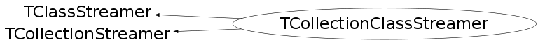

class TCollectionClassStreamer: public TClassStreamer, public TCollectionStreamer
Small helper to save proxy environment in the event of recursive calls.
Function Members (Methods)
public:
| TCollectionClassStreamer() | |
| TCollectionClassStreamer(const TCollectionClassStreamer& c) | |
| virtual | ~TCollectionClassStreamer() |
| void | TCollectionStreamer::AdoptStreamer(TGenCollectionProxy* streamer) |
| virtual TClassStreamer* | Generate() const |
| virtual const TClass* | TClassStreamer::GetOnFileClass() const |
| TGenCollectionProxy* | GetXYZ() |
| virtual void | operator()(TBuffer& buff, void* obj) |
| TClassStreamer& | TClassStreamer::operator=(const TClassStreamer&) |
| virtual void | TClassStreamer::SetOnFileClass(const TClass* cl) |
| virtual void | Stream(TBuffer& b, void* obj, const TClass* onfileClass) |
| void | TCollectionStreamer::Streamer(TBuffer& refBuffer, void* obj, int siz, TClass* onFileClass) |
protected:
| void | TCollectionStreamer::InvalidProxyError() |
Data Members
protected:
| TClassRef | TClassStreamer::fOnFileClass | |
| TGenCollectionProxy* | TCollectionStreamer::fStreamer | / Pointer to worker streamer |
Class Charts
{kind=link}
{kind=link}
{kind=link}
{kind=link}

Function documentation
void operator()(TBuffer& buff, void* obj)
Streamer for I/O handling
{ Streamer(buff,obj,0,fOnFileClass); }